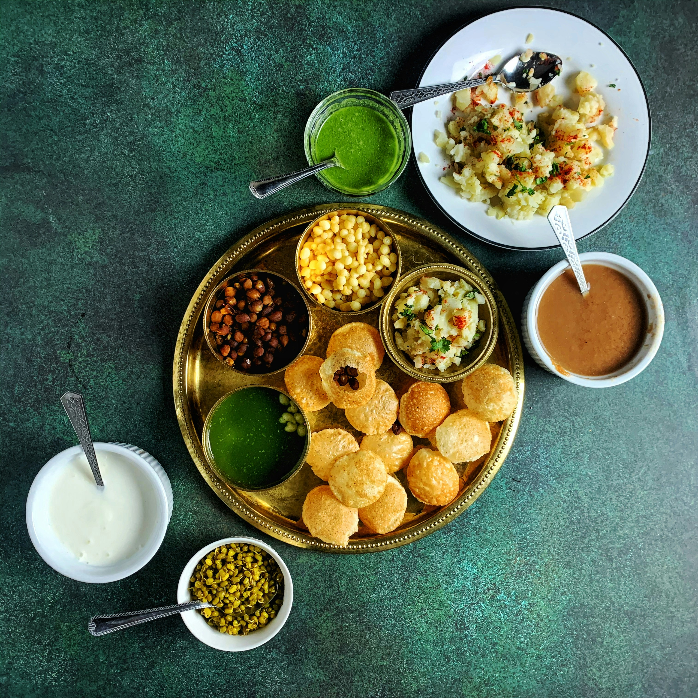

Pani puri

Description
Pani Puri is a popular Indian street food made of small, crispy hollow puris filled with spiced potatoes, chickpeas, and a tangy, spicy mint water. You eat each one in a single bite, so all the flavors burst in your mouth at once.
It's found at street stalls all across India and is loved for its mix of spicy, sour, and sweet flavors.
Ingredients
- 30 ready-made puris
- 2 boiled potatoes, mashed
- 1 cup boiled chickpeas
- 1 cup fresh mint leaves
- 1/2 cup fresh coriander
- 2 green chilies
- 1 tbsp tamarind paste
- 1 tsp chaat masala
- 1 tsp roasted cumin powder
- Black salt to taste
- 4 cups cold water
Steps
- Blend the mint, coriander, green chilies, and tamarind paste with a little water until smooth.
- Mix the blended paste into the cold water, then add chaat masala, cumin powder, and black salt. Chill it in the fridge.
- Mix the mashed potatoes and chickpeas with a pinch of salt and chaat masala for the filling.
- Gently poke a small hole in the top of each puri with your thumb.
- Fill each puri with a spoonful of the potato and chickpea mix.
- Dip the filled puri into the spicy water and eat it right away in one bite.
Home